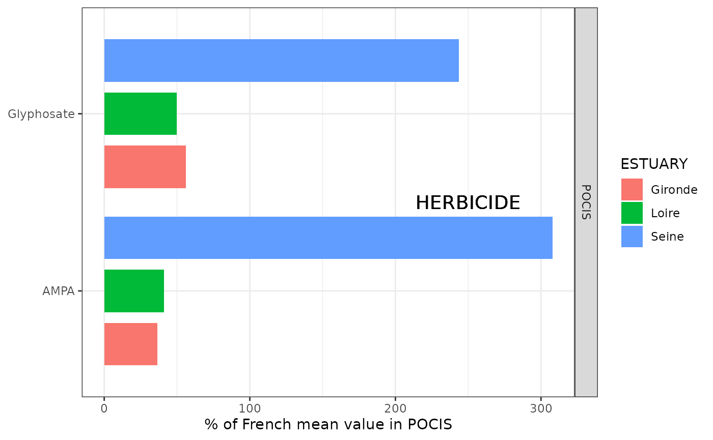
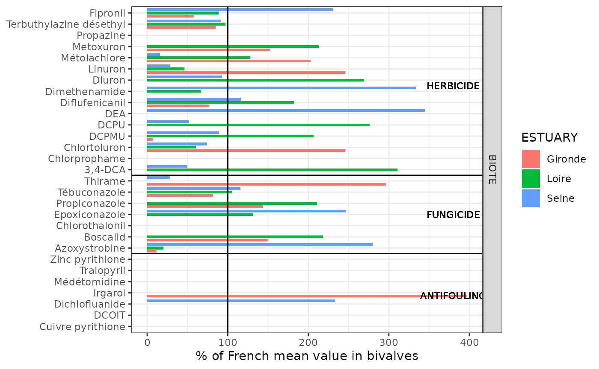

Same values for bivalve and POCIS in µg.kg-1, p.h. => delete POCIS rows POCIS in ng.g-1 => delete POCIS rows bivalve in ng.l-1 => delete bivalve rows
data_emergentsea_y |>
select(ESTUARY, PARAMETRE_LIBELLE, matrix, UNITE, RESULTAT)## # A tibble: 250 × 5
## ESTUARY PARAMETRE_LIBELLE matrix UNITE RESULTAT
## <fct> <chr> <chr> <chr> <dbl>
## 1 NA 2,4-D POCIS ng.g-1 12.9
## 2 NA 2,4-D POCIS ng.l-1 4.16
## 3 NA 2-hydroxy atrazine POCIS ng.g-1 49.2
## 4 NA 2-hydroxy atrazine POCIS ng.l-1 4.07
## 5 Gironde 3,4-DCA BIOTE µg.kg-1, p.h. 0
## 6 Loire 3,4-DCA BIOTE µg.kg-1, p.h. 0.41
## 7 Seine 3,4-DCA BIOTE µg.kg-1, p.h. 0.065
## 8 NA 3,4-DCA BIOTE µg.kg-1, p.h. 0.0525
## 9 Gironde AMPA POCIS ng.l-1 4.2
## 10 Loire AMPA POCIS ng.l-1 4.73
## # ℹ 240 more rows
mean_france_POCIS <- data_emergentsea_POCIS |>
group_by(PARAMETRE_LIBELLE, family, matrix, UNITE) |>
summarise(mean_france = mean(RESULTAT, na.rm = TRUE), .groups = "drop")
mean_france_BIOTE <- data_emergentsea_BIOTE |>
group_by(PARAMETRE_LIBELLE, family, matrix, UNITE) |>
summarise(mean_france = mean(RESULTAT, na.rm = TRUE), .groups = "drop")
mean_estuaries_POCIS <- data_emergentsea_POCIS |>
drop_na(ESTUARY) |>
group_by(ESTUARY, PARAMETRE_LIBELLE, family, matrix, UNITE) |>
summarise(mean_estuary = mean(RESULTAT), .groups = "drop")
mean_estuaries_BIOTE <- data_emergentsea_BIOTE |>
drop_na(ESTUARY) |>
group_by(ESTUARY, PARAMETRE_LIBELLE, family, matrix, UNITE) |>
summarise(mean_estuary = mean(RESULTAT), .groups = "drop")
means_POCIS <- left_join(mean_estuaries_POCIS, mean_france_POCIS)## Joining with `by = join_by(PARAMETRE_LIBELLE, family, matrix, UNITE)`
means_BIOTE <- left_join(mean_estuaries_BIOTE, mean_france_BIOTE)## Joining with `by = join_by(PARAMETRE_LIBELLE, family, matrix, UNITE)`
percent_france_POCIS <- means_POCIS |>
mutate(percent_france = mean_estuary/mean_france * 100) |>
filter(!is.nan(percent_france)) |>
arrange(family, PARAMETRE_LIBELLE)
percent_france_BIOTE <- means_BIOTE |>
mutate(percent_france = mean_estuary/mean_france * 100) |>
filter(!is.nan(percent_france)) |>
arrange(family, PARAMETRE_LIBELLE)
# Names
percent_france_POCIS |>
distinct(family, PARAMETRE_LIBELLE) |>
arrange(family, PARAMETRE_LIBELLE)## # A tibble: 2 × 2
## family PARAMETRE_LIBELLE
## <chr> <chr>
## 1 herbicides AMPA
## 2 herbicides Glyphosate## # A tibble: 1 × 2
## family n
## <chr> <int>
## 1 herbicides 2
# Colors
percent_france_POCIS_colors <- percent_france_POCIS |>
mutate(color = case_when(
percent_france < 50 ~ "blue",
percent_france < 100 ~ "green",
percent_france < 200 ~ "yellow",
percent_france < 300 ~ "orange",
percent_france < 400 ~ "red",
percent_france >= 400 ~ "black"
)) |>
select(ESTUARY, PARAMETRE_LIBELLE, family, matrix, UNITE, color) |>
pivot_wider(names_from = ESTUARY, values_from = color)
writexl::write_xlsx(x = percent_france_POCIS_colors, path = "../inst/results/data_contam/emergentsea/percent_france_POCIS_colors.xlsx")
# Levels
PNEC <- tribble(
~ "PARAMETRE_LIBELLE", ~ "PNEC",
"AMPA", 150,
"Glyphosate", 12)
means_POCIS |>
left_join(PNEC) |>
select(-mean_france) |>
mutate(mean_estuary = mean_estuary > PNEC) |>
pivot_wider(names_from = ESTUARY, values_from = mean_estuary) |>
arrange(family, PARAMETRE_LIBELLE)## Joining with `by = join_by(PARAMETRE_LIBELLE)`## # A tibble: 2 × 8
## PARAMETRE_LIBELLE family matrix UNITE PNEC Gironde Loire Seine
## <chr> <chr> <chr> <chr> <dbl> <lgl> <lgl> <lgl>
## 1 AMPA herbicides POCIS ng.l-1 150 FALSE FALSE FALSE
## 2 Glyphosate herbicides POCIS ng.l-1 12 FALSE FALSE FALSE
ggplot_percent_france_POCIS <- ggplot(percent_france_POCIS) +
aes(x = fct_reorder(PARAMETRE_LIBELLE, family),
y = percent_france,
fill = ESTUARY) +
geom_col(position = position_dodge2(padding = 0.2)) +
geom_text(x = 1.5, y = 250, label = "HERBICIDE", size = 5) +
labs(x = NULL, y = "% of French mean value in POCIS") +
facet_grid(vars(matrix)) +
coord_flip() +
theme_bw()
ggplot_percent_france_POCIS
ggsave(plot = ggplot_percent_france_POCIS,
filename = "../inst/results/data_contam/emergentsea/ggplot_emergentsea_POCIS.jpg")## Saving 7.29 x 4.51 in image
# Names
percent_france_BIOTE |>
distinct(family, PARAMETRE_LIBELLE) |>
arrange(family, PARAMETRE_LIBELLE)## # A tibble: 29 × 2
## family PARAMETRE_LIBELLE
## <chr> <chr>
## 1 antifouling Cuivre pyrithione
## 2 antifouling DCOIT
## 3 antifouling Dichlofluanide
## 4 antifouling Irgarol
## 5 antifouling Médétomidine
## 6 antifouling Tralopyril
## 7 antifouling Zinc pyrithione
## 8 fungicides Azoxystrobine
## 9 fungicides Boscalid
## 10 fungicides Chlorothalonil
## # ℹ 19 more rows## # A tibble: 4 × 2
## family n
## <chr> <int>
## 1 antifouling 7
## 2 fungicides 7
## 3 herbicides 14
## 4 insecticides 1
# Colors
percent_france_BIOTE_colors <- percent_france_BIOTE |>
mutate(color = case_when(
percent_france < 50 ~ "blue",
percent_france < 100 ~ "green",
percent_france < 200 ~ "yellow",
percent_france < 300 ~ "orange",
percent_france < 400 ~ "red",
percent_france >= 400 ~ "black"
)) |>
select(ESTUARY, PARAMETRE_LIBELLE, family, matrix, UNITE, color) |>
pivot_wider(names_from = ESTUARY, values_from = color)
writexl::write_xlsx(x = percent_france_BIOTE_colors, path = "../inst/results/data_contam/emergentsea/percent_france_BIOTE_colors.xlsx")
# Levels
PNEC <- tribble(
~ "PARAMETRE_LIBELLE", ~ "PNEC",
"Cuivre pyrithione", NA,
"DCOIT", 0.07,
"Dichlofluanide", 0.03,
"Irgarol",0.01,
"Médétomidine", 0.00,
"Tralopyril", 0.68,
"Zinc pyrithione", NA,
"Azoxystrobine", 0.06,
"Boscalid", 232.95,
"Chlorothalonil", 0.06,
"Epoxiconazole", NA,
"Propiconazole", 1.60,
"Thirame", 0.04,
"Tébuconazole", 1.46,
"3,4-DCA", 0.06,
"Chlorprophame", 3.24,
"Chlortoluron", 0.54,
"DCPMU", 0.88,
"DCPU", 2.30,
"DEA", 0.07,
"Diflufenicanil", 0.01,
"Dimethenamide", 0.20,
"Diuron", 0.71,
"Linuron", 0.04,
"Metoxuron", 0.10,
"Métolachlore", 0.27,
"Propazine", 0.06,
"Terbuthylazine désethyl", 0.07,
"Fipronil", 0.00)
means_BIOTE |>
left_join(PNEC) |>
select(-mean_france) |>
mutate(mean_estuary = mean_estuary > PNEC) |>
pivot_wider(names_from = ESTUARY, values_from = mean_estuary) |>
arrange(family, PARAMETRE_LIBELLE)## Joining with `by = join_by(PARAMETRE_LIBELLE)`## # A tibble: 34 × 8
## PARAMETRE_LIBELLE family matrix UNITE PNEC Gironde Loire Seine
## <chr> <chr> <chr> <chr> <dbl> <lgl> <lgl> <lgl>
## 1 Cuivre pyrithione antifouling BIOTE µg.kg-1, p.h. NA NA NA NA
## 2 DCOIT antifouling BIOTE µg.kg-1, p.h. 0.07 FALSE FALSE FALSE
## 3 Dichlofluanide antifouling BIOTE µg.kg-1, p.h. 0.03 FALSE FALSE TRUE
## 4 Irgarol antifouling BIOTE µg.kg-1, p.h. 0.01 TRUE FALSE FALSE
## 5 Médétomidine antifouling BIOTE µg.kg-1, p.h. 0 FALSE FALSE FALSE
## 6 Tralopyril antifouling BIOTE µg.kg-1, p.h. 0.68 FALSE FALSE FALSE
## 7 Zinc pyrithione antifouling BIOTE µg.kg-1, p.h. NA NA NA NA
## 8 Zinèbe antifouling BIOTE µg.kg-1, p.h. NA NA NA NA
## 9 Azoxystrobine fungicides BIOTE µg.kg-1, p.h. 0.06 FALSE FALSE TRUE
## 10 Boscalid fungicides BIOTE µg.kg-1, p.h. 233. FALSE FALSE FALSE
## # ℹ 24 more rows
ggplot_percent_france_BIOTE <- ggplot(percent_france_BIOTE) +
aes(x = fct_reorder(PARAMETRE_LIBELLE, family),
y = percent_france,
fill = ESTUARY) +
geom_col(position = position_dodge2(padding = 0.2)) +
geom_text(x = 3.75, y = 380, label = "ANTIFOULING", size = 3) +
geom_vline(xintercept = 7.5) +
geom_text(x = 11, y = 380, label = "FUNGICIDE", size = 3) +
geom_vline(xintercept = 14.5) +
geom_text(x = 22.5, y = 380, label = "HERBICIDE", size = 3) +
geom_vline(xintercept = 30.5) +
geom_text(x = 31, y = 380, label = "INSECTICIDE", size = 3) +
geom_hline(yintercept = 100) +
labs(x = NULL, y = "% of French mean value in bivalves") +
facet_grid(vars(matrix)) +
coord_flip() +
theme_bw()
ggplot_percent_france_BIOTE
ggsave(plot = ggplot_percent_france_BIOTE,
filename = "../inst/results/data_contam/emergentsea/ggplot_emergentsea_BIOTE.jpg")## Saving 7.29 x 4.51 in image
median_france <- data_emergentsea_y |>
group_by(PARAMETRE_LIBELLE, family, matrix, UNITE) |>
summarise(median_france = median(RESULTAT))## `summarise()` has grouped output by 'PARAMETRE_LIBELLE', 'family', 'matrix'.
## You can override using the `.groups` argument.
median_france_POCIS <- median_france |>
filter(matrix == "POCIS")
median_france_BIOTE <- median_france |>
filter(matrix == "BIOTE")
medians_POCIS <- left_join(mean_estuaries_POCIS, median_france_POCIS) |>
arrange(family, PARAMETRE_LIBELLE) |>
mutate(over_median = case_when(
mean_estuary > median_france ~ TRUE,
TRUE ~ FALSE
))## Joining with `by = join_by(PARAMETRE_LIBELLE, family, matrix, UNITE)`
medians_POCIS |>
filter(over_median == TRUE)## # A tibble: 4 × 8
## ESTUARY PARAMETRE_LIBELLE family matrix UNITE mean_estuary median_france
## <fct> <chr> <chr> <chr> <chr> <dbl> <dbl>
## 1 Loire AMPA herbicides POCIS ng.l-1 4.73 4.47
## 2 Seine AMPA herbicides POCIS ng.l-1 35.4 4.47
## 3 Gironde Glyphosate herbicides POCIS ng.l-1 0.6 0.569
## 4 Seine Glyphosate herbicides POCIS ng.l-1 2.6 0.569
## # ℹ 1 more variable: over_median <lgl>
medians_BIOTE <- left_join(mean_estuaries_BIOTE, median_france_BIOTE) |>
arrange(family, PARAMETRE_LIBELLE) |>
mutate(over_median = case_when(
mean_estuary > median_france ~ TRUE,
TRUE ~ FALSE
))## Joining with `by = join_by(PARAMETRE_LIBELLE, family, matrix, UNITE)`
medians_BIOTE|>
filter(over_median == TRUE)## # A tibble: 33 × 8
## ESTUARY PARAMETRE_LIBELLE family matrix UNITE mean_estuary median_france
## <fct> <chr> <chr> <chr> <chr> <dbl> <dbl>
## 1 Seine Dichlofluanide antifouling BIOTE µg.k… 0.515 0.185
## 2 Gironde Irgarol antifouling BIOTE µg.k… 0.2 0.000789
## 3 Seine Azoxystrobine fungicides BIOTE µg.k… 0.0845 0.0163
## 4 Gironde Boscalid fungicides BIOTE µg.k… 0.0875 0.0528
## 5 Loire Boscalid fungicides BIOTE µg.k… 0.127 0.0528
## 6 Loire Epoxiconazole fungicides BIOTE µg.k… 0.004 0.00232
## 7 Seine Epoxiconazole fungicides BIOTE µg.k… 0.0075 0.00232
## 8 Gironde Propiconazole fungicides BIOTE µg.k… 0.188 0.124
## 9 Loire Propiconazole fungicides BIOTE µg.k… 0.277 0.124
## 10 Gironde Thirame fungicides BIOTE µg.k… 0.79 0.138
## # ℹ 23 more rows
## # ℹ 1 more variable: over_median <lgl>